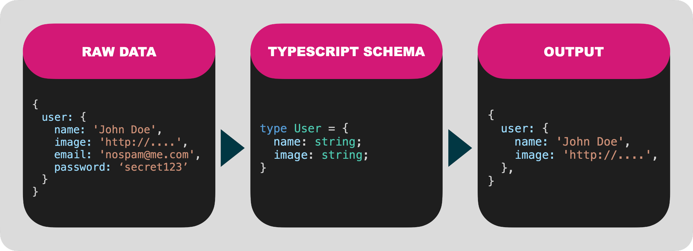

Scrubbr¶
Serializing data in node shouldn't be hard. You shouldn't have to worry about accidentally leaking private information through your APIs.
If you're using TypeScript, you already have everythign you need to effortlessly serialize and transform your data.

Scrubbr transforms your TypeScript into a JSON schema and uses that to format your data.
Install¶
npm i -S scrubbr
Quick Start¶
The simplest example is to filter out sensitive data.
In this example we want to filter the email and password out of this sample data:
{
users: [
{
name: 'John Doe',
image: 'http://i.pravatar.cc/300',
email: 'donotspam@me.com',
password: 'xxxsecretxxx',
},
],
};
1. Define your TypeScript schema¶
First define a TypeScript schema file that only contains the properties you want in our output.
// schema.ts
type UserList = {
users: User[];
};
type User = {
name: string;
image: string;
};
2. Serialize with Scrubbr¶
Now initialize Scrubbr with a path to the schema file and serialize the data.
import Scrubbr from 'scrubbr';
// PERFORMANCE NOTE: this is a synchronous call!
// Load early and cache to a shared variable.
const scrubbr = new Scrubbr('./schema.ts');
function api() {
const data = getUsers();
// Serialize the data based on the UserList type defined in schema.ts
return scrubbr.serialize('UserList', data);
}
3. Ouput¶
{
"users": [
{
"name": "John Doe",
"image": "http://i.pravatar.cc/300"
}
]
}
4. Try it yourself¶
You can play with an more complex example yourself by modifying the files in ./example and then running:
npm run example
Next up¶
Follow along for more advanced features.